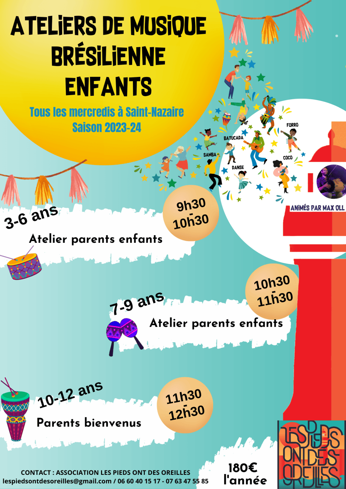

Les ateliers enfants arrivent en septembre !

Les ateliers de musique brésilienne enfants commencent en septembre avec Max Oll.
Ça va être chouette. Contactez-nous pour les inscriptions et les informations.

Les ateliers de musique brésilienne enfants commencent en septembre avec Max Oll.
Ça va être chouette. Contactez-nous pour les inscriptions et les informations.